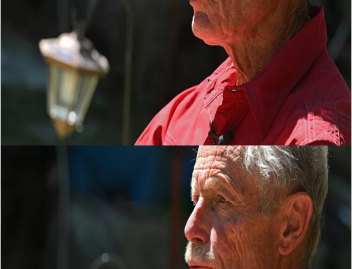

Il a tout tenté. Mais vraiment tout ! Un jeune automobiliste de 23 ans a pris des risques totalement inconsidérés vendredi soir pour tenter d’échapper aux gendarmes près de Fronsac dans le Libournais en Gironde. Une folle course-poursuite qui s’est terminée à pied dans la vase de la Dordogne.
Quelques minutes plus tôt, le jeune homme connu des forces de l’ordre refuse un contrôle routier avant de se retrouver pris au piège dans une impasse. Il décide alors de faire marche arrière et fonce vers les gendarmes qui répliquent à plusieurs reprises avec leurs armes sans faire de blessé, rapporte Sud Ouest. La course-poursuite reprend mais pas pour longtemps car le conducteur perd le contrôle de son véhicule avec un pneu crevé.

Il poursuit à pied avant de se rendre
Mais peu importe, rien n’arrête le fuyard. Il continue à pied en abandonnant sa compagne dans la voiture. Il saute dans la Dordogne avant de se retrouver pris au piège dans la vase de celle-ci. Après discussions avec les forces de l’ordre et sa compagne, il finit par se rendre.
Déjà connu pour une affaire de violences sur personne dépositaire de l’autorité publique en avril 2019, il a été placé en garde à vue et devrait être déféré ce dimanche en vue d’une comparution immédiate devant le tribunal correctionnel de Libourne pour « violences » et « refus d’obtempérer » aggravés par plusieurs circonstances.
ZPP, en revanche, dans l’ouest de la France… Juste une question de temps ? Car le loup s’y aventure également. Le 21 janvier, un individu a été aperçu en Charente, pour la première fois dans ce département depuis près d’un siècle. Le 8 avril, à Londinières, à quelques kilomètres au sud de Dieppe (Seine-Maritime), un animal dont la silhouette ressemble fortement à celle du loup gris se faisait tirer le portrait par un appareil photographique automatique en pleine nuit. Quatre attaques sur ovins et une prédation sur chevreuil ont été signalées depuis, rapportait la préfecture du département le 2 mai. Là encore, une première depuis plus d’un siècle.
Faut-il s’en étonner ? Nicolas Jean, directeur adjoint à la Direction nationale des grands prédateurs terrestres à l’OFB, répond aux questions de 20 Minutes…
ésence d’un loup gris en Seine-Maritime est-elle aujourd’hui certifiée ?
C’est toute la difficulté avec le loup, espèce très mobile et relativement discrète : il faut avoir de la donnée pour pouvoir certifier la présence. Dans l’idéal, il nous faudrait une photo de bonne qualité, prise en plein jour, ou un élément biologique – soit des excréments, soit des poils – pour procéder à des analyses génétiques. No présence. Dans l’idéal, il us n’avons steuplet aujourd’hui ni l’un, ni l’autre. Il n’empêche, la présence d’un loup dans cette zone est très fortement suspectée. Nous avons un faisceau d’indices convergents depuis plusieurs semaines, dont de nouvelles attaques sur troupeaux, ces derniers jours, qui sont très caractéristiques de ce que peut faire un loup.